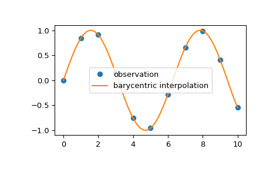

scipy.interpolate.barycentric_interpolate¶
-
scipy.interpolate.barycentric_interpolate(xi, yi, x, axis=0)[source]¶ Convenience function for polynomial interpolation.
Constructs a polynomial that passes through a given set of points, then evaluates the polynomial. For reasons of numerical stability, this function does not compute the coefficients of the polynomial.
This function uses a “barycentric interpolation” method that treats the problem as a special case of rational function interpolation. This algorithm is quite stable, numerically, but even in a world of exact computation, unless the x coordinates are chosen very carefully - Chebyshev zeros (e.g., cos(i*pi/n)) are a good choice - polynomial interpolation itself is a very ill-conditioned process due to the Runge phenomenon.
- Parameters
- xiarray_like
1-D array of x coordinates of the points the polynomial should pass through
- yiarray_like
The y coordinates of the points the polynomial should pass through.
- xscalar or array_like
Points to evaluate the interpolator at.
- axisint, optional
Axis in the yi array corresponding to the x-coordinate values.
- Returns
- yscalar or array_like
Interpolated values. Shape is determined by replacing the interpolation axis in the original array with the shape of x.
See also
BarycentricInterpolatorBary centric interpolator
Notes
Construction of the interpolation weights is a relatively slow process. If you want to call this many times with the same xi (but possibly varying yi or x) you should use the class
BarycentricInterpolator. This is what this function uses internally.Examples
We can interpolate 2D observed data using barycentric interpolation:
>>> import matplotlib.pyplot as plt >>> from scipy.interpolate import barycentric_interpolate >>> x_observed = np.linspace(0.0, 10.0, 11) >>> y_observed = np.sin(x_observed) >>> x = np.linspace(min(x_observed), max(x_observed), num=100) >>> y = barycentric_interpolate(x_observed, y_observed, x) >>> plt.plot(x_observed, y_observed, "o", label="observation") >>> plt.plot(x, y, label="barycentric interpolation") >>> plt.legend() >>> plt.show()
